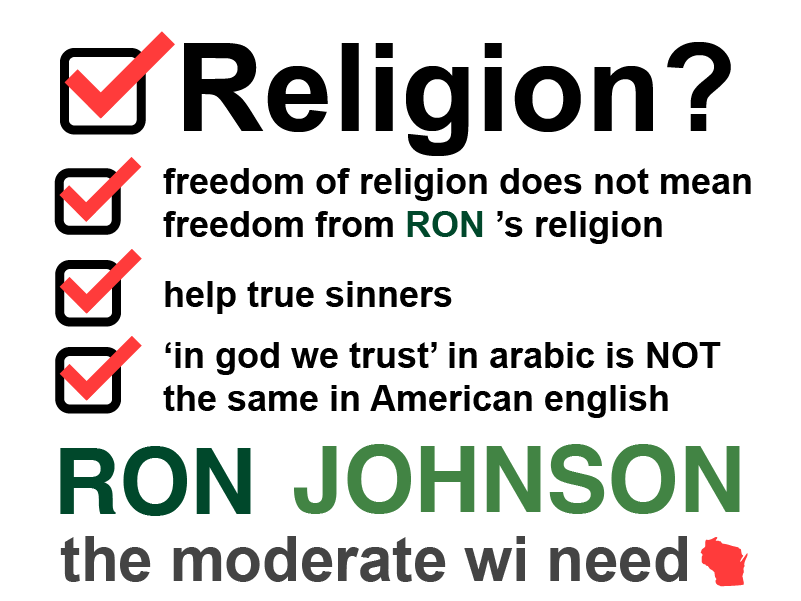

Religion
Sept 12, 2022 by RJ
The Freedom of Religion means Americans are able to practice to
worship the way they see fit, free from persecution, free from
liberal revisions of the one true word.
The Freedom of Religion also means I don't need to hide my
religion from anyone else, especially those who don't believe in
the same things.
Americans should be able to exercise their religous beleifs,
because you don't stop being a true Christian when you clock into
Walmart or Kwik Trip.
"Whoever Is Not Against Us Is for Us" - Mark 9:38-41
That is one of my favorite lines from the Good Book. I try to
remind myself of it whenever I see people, like the vocal liberal
extremists, being loud and obnoxious, because then I think about
the silent agreers -- because Mark says they are
for us, and they're often women too.
Purpose
August 31, 2022 by RJ
Some religious fanatics say that religion exists so that
men can worship God. I believe God put us on Earth so that
we can enjoy that he created for us. He wanted us to thrive. And
he made us exceptional and elite.
I believe God gave us religion so we can understand God better:
Psalm 7:11-13
God is a righteous judge, And a God who has indignation every
day. If a man does not repent, He will sharpen His sword; He has
bent His bow and made it ready. He has also prepared for Himself
deadly weapons; He makes His arrows fiery shafts.
I believe God gave us religion so we can save sinners. That's why
I start the Joseph Project with Pastor Jerome Smith of Greater
Praise Church of God in Christ, an initiative that connects folks
with good jobs and is truly turning sinners's lives around.
Here in Wisconsin, we have plenty of sinners that need help. Many
of my teachers and pastors are sinners. And they need my help. I
take the lesson from Psalms and hope they repent just like I did.
For some reason, I like this flag. I'm not running for Governor,
but I might run for President!
'God Bless America'
July 4, 2022 by RJ
This was a phrase we sang almost everyday in grade school.
God Bless America. That actually meant something back then.
Now it's something you hardly hear and when you do, you don't
believe the ugly person saying it.
I don't speak or read Arabic, but people say it's a beautiful
language. I try to believe that -- but when people people show
signs that say 'God Bless America' in Arabic it doesn't feel right
-- how do I know that's what it actually says anyway?
Where we go one
8/8/2022 by RQ
John 6:68-69
Simon Peter answered him, “Lord, to whom shall we go? You have
the words of eternal life, and we have believed, and have come
to know, that you are the Holy One of God.”
We can see from this special version that Simone Peter is say
where we go to the One, we should all ago. Question is, how many
truly believe this.
One way to follow God is follow those that most like God. I may
not be president but I have been following one of the most Godly
men
even before he took office in 2016.
He's praised me for my efforts and I've been helping him ever
since.
Was Jesus a Socialist?
August 31, 2022 by RJ
Definitely NOT.
The idea was not even invented yet, so there was no way Jesus
could be. But I also know with near certainty that Jesus
would be a Friedman capitalist if he had the choice -- it
just makes sense!
Religion is what you get out of it
August 31, 2022 by RHJ
I was talking to some non-beleivers (AKA Democrats) and they asked
me that if I died tonight would I know if I would end up in
Heaven. First off, I found that question to be a non-sequitor, but
I thought about it for a while, and I know for certain that I
would be in Heaven. Here's why:
- God wants me to be happy and in Heaven
-
I truly believe that Jesus died for your sins and that my own
actions cannot save you
-
I have lived a life that honestly has been even holier than
Donald Trump